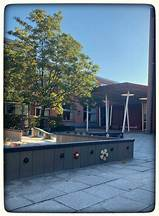
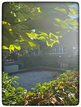
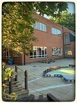

Welkom in Basisschool Mater Dei Centrum
A welcoming elementary school for boys and girls - supported by motivated teachers - with attention for Christian values - where every child from 2.5 to 12 years of age may be “at home” - with much attention to care-wide education - where every child gets the chance to develop optimally through quality education - with attention for head, heart and hands! WELCOME!
  